人工智能学派分类¶
约 4819 个字 23 张图片 预计阅读时间 24 分钟
| 学派 | 核心思想 | 主要成果 | 应用 |
|---|---|---|---|
| 符号主义 | 认为人类认知和思维的基本单元是符号，认知过程是以符号表示为基础的逻辑运算，计算机可以模拟人的智能行为。核心是构建符号表达知识。 | 机器定理程序、启发式算法、专家系统 | / |
| 联结主义 | 试图通过模拟大脑的神经网络来解释人类的认知功能，如记忆、学习、语言处理和模式识别。目标是实现模拟人脑的结构，产生了神经网络方法。 | 神经网络、深度学习、现代人工智能大语言模型 | 人脸识别，机器翻译，chatGPT，图像分类 |
| 行为主义 | 构建一个智能体，关注智能体在环境中的行为，智能体以最大化奖励为目标，与环境不断交互来学习和适应，会根据行为的结果进行调整。 | 强化学习、Q-learning 和策略梯度方法 | 游戏 AI、机器人控制、自动驾驶 |
机器学习分类¶
1. 按照学习方式分类:
| 分类方式 | 定义 | 目标 | 应用场景 | 示例 |
|---|---|---|---|---|
| 监督学习 | 通过提供带标注的训练数据（输入-输出配对）来训练模型，模型学会将输入映射到输出。 | 找到一个函数 (f (x))，使其从输入 (x) 出发预测输出 (y)。 | 分类（垃圾邮件检测、图像识别、情感分析）；回归（房价预测、天气预测）。 | 邮件分类问题：输入邮件文本，输出"垃圾邮件" 或"非垃圾邮件"。 |
| 无监督学习 | 模型在没有任何标签（输出）的情况下，从输入数据中发现隐藏的模式或结构。 | 对数据进行聚类、降维或生成某种分布。 | 聚类（客户群体划分、图片分组）；降维（数据可视化、噪声过滤，如 PCA 主成分分析）；生成建模（生成数据的潜在分布，如 GAN 生成图像）。 | 网上消费行为分析：根据用户购买记录将用户分群，无需明确标签[高价值客户]、[低消费客户]。 |
| 强化学习 | 通过智能体与环境的交互来学习行为策略的方法，智能体通过试错机制获得奖励并优化自身策略。 | 最大化长期累积的奖励值。 | 游戏 AI（如 AlphaGo）；机器人控制；动态定价策略。 | AlphaGo 对弈：智能体通过模拟围棋对局，优化其胜率策略。 |
2. 按照学习算法分类:
| 分类方式 | 算法 |
|---|---|
| 监督学习 | 线性回归、岭回归、Lasso 回归、支持向量机（SVM）、决策树、随机森林、逻辑回归、K 近邻算法、神经网络。 |
| 无监督学习 | K-Means、层次聚类、DBSCAN、PCA（主成分分析）、t-SNE。 |
| 深度学习 | 卷积神经网络（CNN）、循环神经网络（RNN）、Transformer。人基模块笔记 |
| # 深度学习 |
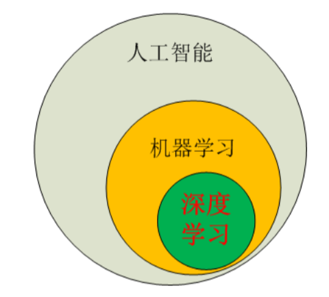
感知机¶
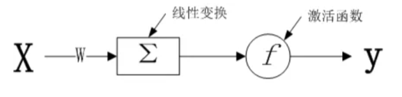
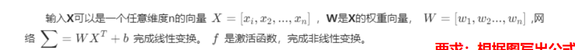
激活函数¶
激活函数的作用是通过非线性变换，使神经网络具备非线性特性，以解决一些非线性任务
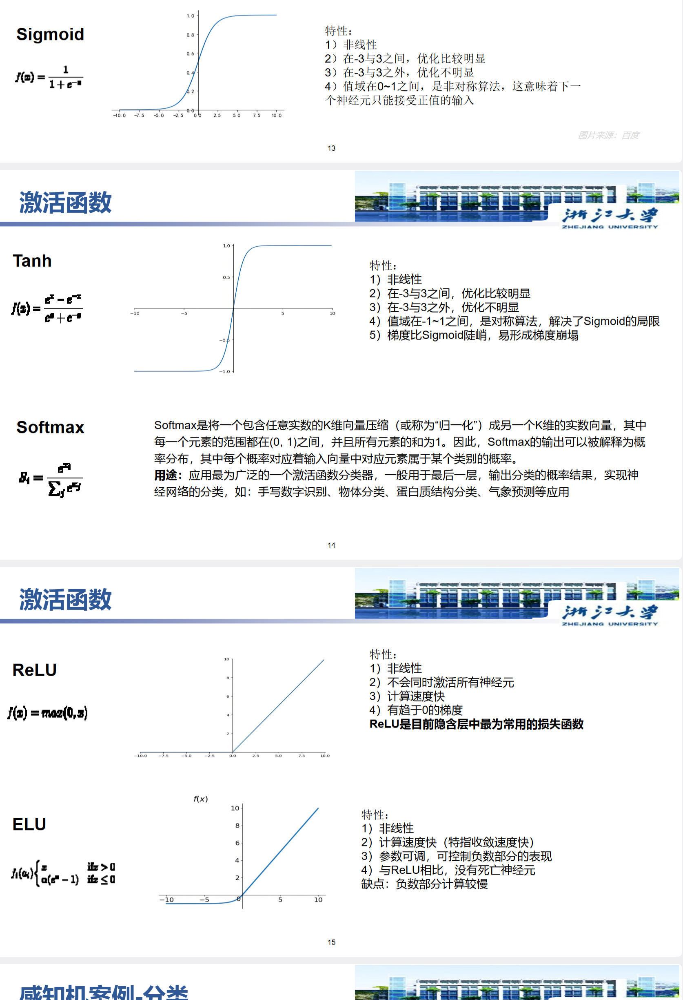
单层感知机无法解决“异或问题
Mlp（多层感知机）¶
只有一个隐含层的叫浅层学习网络，隐含层大于一层的叫深度学习网络
处理一维向量数据
损失函数¶
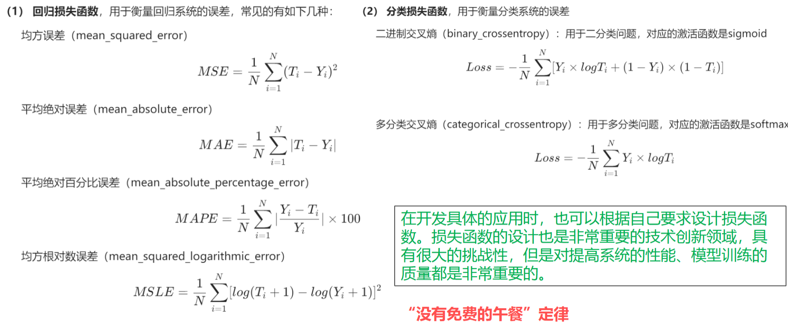
BP 算法¶
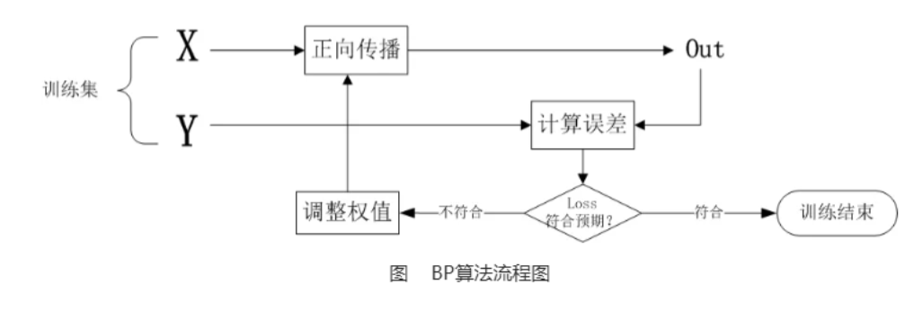
1. 正向传播：计算网络输出和损失函数值；
2. 反向传播：根据链式法则计算损失函数对每个参数的梯度；
3. 梯度下降：利用梯度更新参数，减少损失函数值；
梯度下降¶
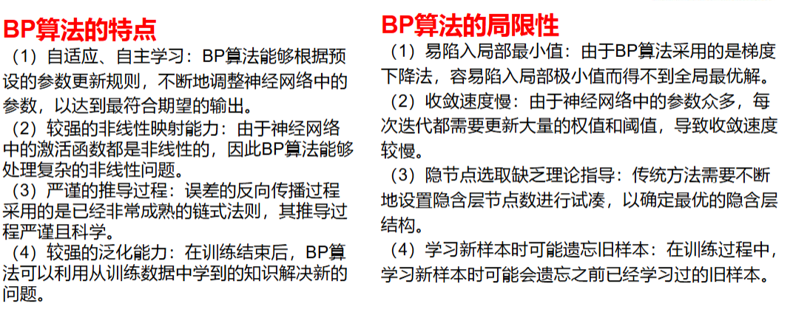
- MLP 是一种网络结构，拥有多层（输入层+隐藏层+输出层）和带非线性激活函数的节点，能够表示复杂的非线性函数。
- 反向传播算法（BP）是训练这种多层网络的关键算法，它用来高效计算网络中每个参数（权重和偏置）对最终误差的梯度。
- MLP 是模型架构。
- BP 是训练 MLP 的算法
Cnn 卷积神经网络¶
卷积神经网络是包含卷积运算的一种特殊前馈神经网络。卷积神经网络一般由卷积层 (convolution)、汇聚/池化层 (pooling) 和全连接层构成。
前面几层每一层进行卷积运算或汇聚/池化运算，卷积实现的是特征检测（提取特征），汇聚/池化实现的是特征选择（信息压缩）；最后儿层是全连接的前馈神经网络，进行分类或回归预测。卷积神经网络是从生物视觉系统得到启发而发明的机器学习模型。
卷积¶
特征检测
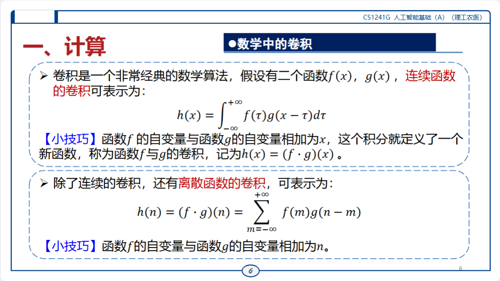
感受野¶
首先进行局部处理，经过多个层次的局部处理提取出特征值，再逐层传递，这个局部的大小范围就是“感受野
卷积运算¶
卷积运算就是通过设计一系列大小适中的卷积核（感受野），对数字图像的各个通道分量（二维矩阵）进行卷积，提取特征值的过程。常用的卷积核大小为 3×3、5×5、7×7
求核矩阵与每一个子矩阵的内积，产生一个𝐾×𝐿输出矩阵𝒀=𝑦𝑘𝑙 𝐾×𝐿，称此运算为卷积 (convolution ) 或二维卷积
补齐/填充操作¶
在输入矩阵的周边添加元素为 0 的行和列，使卷积核能更充分地作用于输入矩阵边缘的元素
“滑”的范围更广
感受野，卷积核，滤波器¶
卷积核（滤波器）对输入的局部区域（感受野）进行卷积操作，提取特征。感受野是衡量神经元输入空间范围的概念，卷积核（滤波器）是实现该操作的具体参数矩阵
卷积核就是要训练的参数 ，训练卷积核的目的是使其对特征的提取更准确，多个卷积核提取不同特征
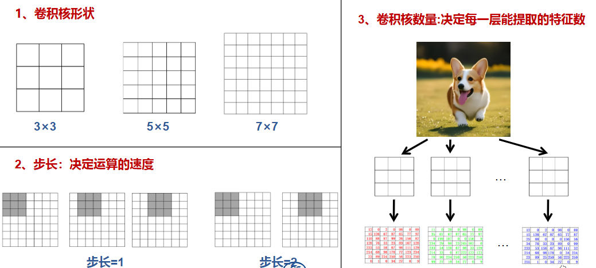
池化¶
在图像处理中，汇聚实现的是特征选择。最基本的情况是二维汇聚，输入是一个矩阵， 矩阵的一个元素表示一个特征，代表特征的检测值。汇聚运算实际是将汇聚核在输入矩阵上进行滑动，从汇聚核覆盖的特征检测值中选择一个最大值或平均值，这样可以有效地进行特征抽取。输出是一个缩小的矩阵，也就是进行了下采样
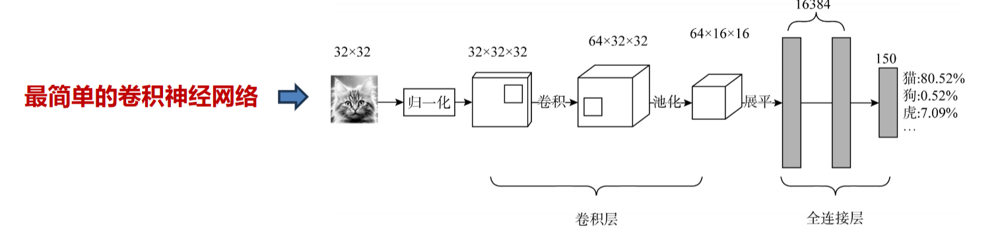
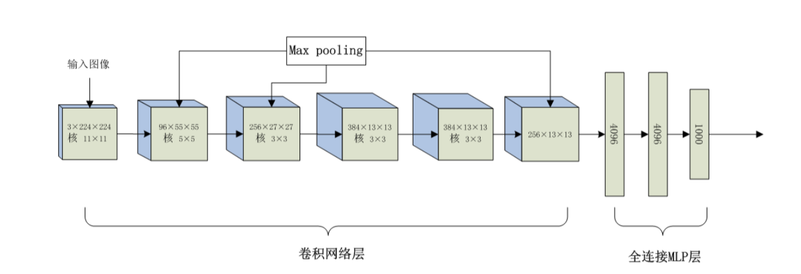
归一化¶
模型的训练需要高质量的数据，但是如果多个特征值的输入数据分布严重不均，数值范围差异巨大，则会产生训练不可收敛或者其他不可预料的问题。为解决这个问题，应保证让不同特征值的数据取值范围一致。最简单的处理方法就是归一化，即将特征值的取值范围压缩在 0~1 之间。
\(𝑦 = \frac{{𝑥 − min}}{max − min}\)
程序题¶
To_categorical：将标签转换为独热编码
Conv 2 D：卷积
MaxPooling 2 D：池化
Flatten：展平
Dense：添加全连接层 mlp
Model. Compile：编译模型
Model. Fit：训练模型
Model. Evaluate：评估模型
Model. Evaluate：评估模型
Models. Load_model：加载模型
Import matplotlib. Pyplot as plt......：可视化训练过程
Rnn, 循环神经网络 (Recurrent Neural Network)¶
基于反馈神经网络
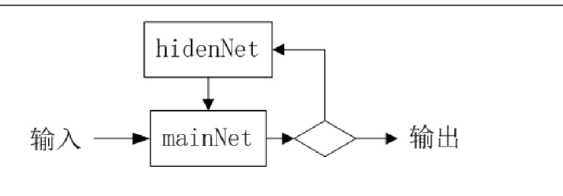
循环神经网络（Recurrent Neural Network，RNN）是一种特殊类型的反馈神经网络，专门用于处理序列数据。其核心思想是通过循环结构，使网络能够捕捉和利用序列中的顺序依赖性信息。
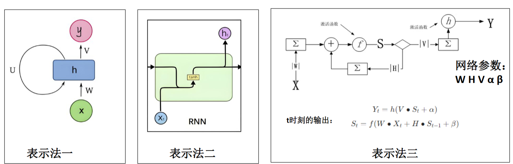
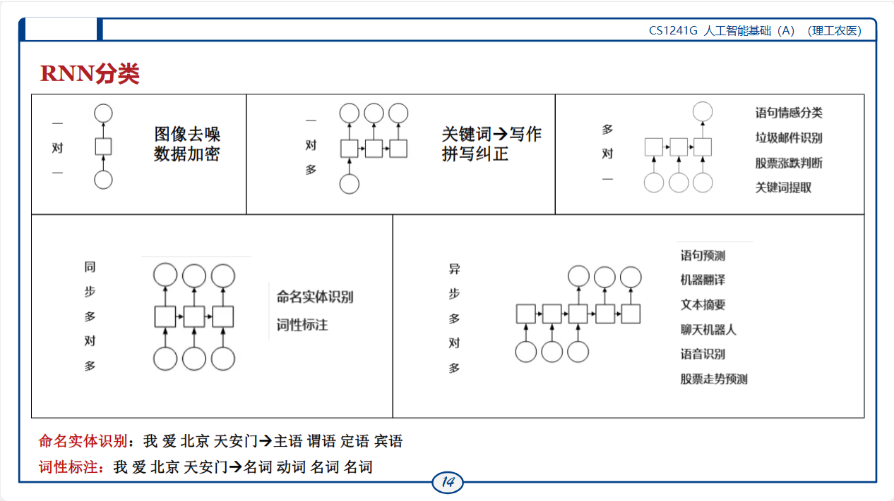
LSTM,长短期记忆网络（Long Short-Term Memory）¶
RNN的问题：无法学习太长的序列，“很快忘记前面说过的话”
长短期记忆网络（Long Short-Term Memory， LSTM ）：专门设计用于解决长期依赖的问题
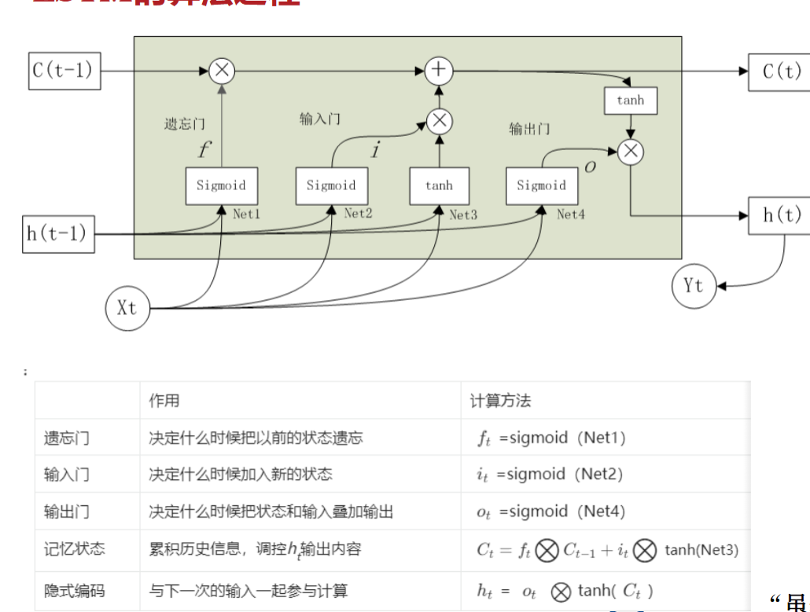
特殊的函数们¶
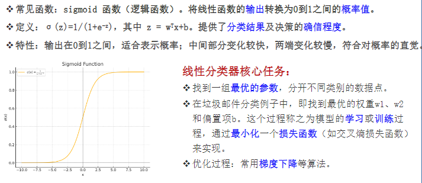
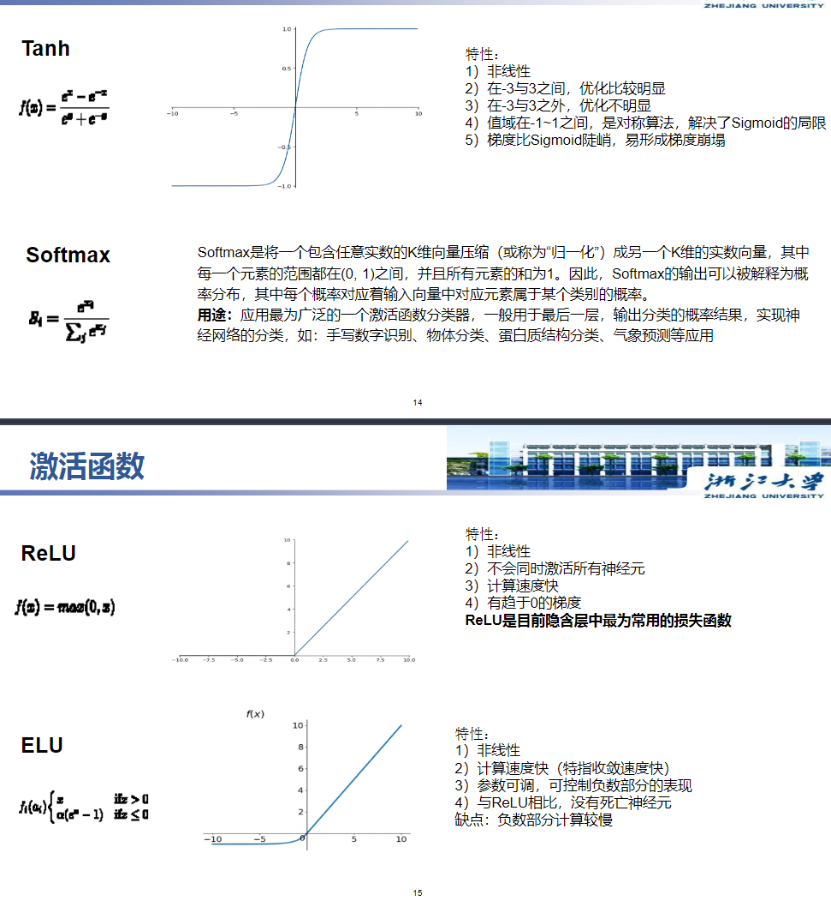
最重要的：
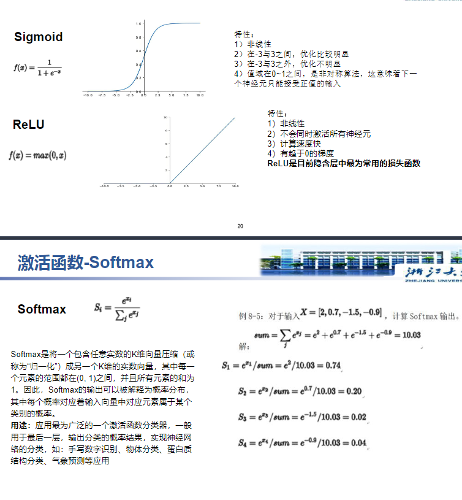
Sigmond: 二分类，逻辑函数与梯度消失的关系
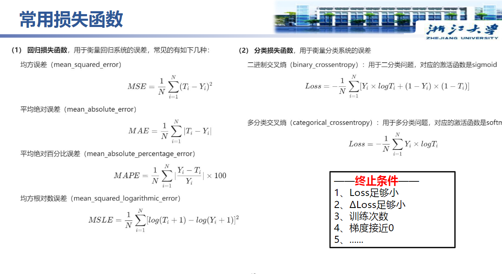
防止过拟合¶
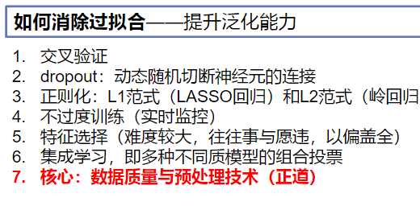
正则化项“抬高”了损失函数的值，不能让损失轻易降到极低（甚至0），从而限制了模型对训练数据的极端拟合
梯度消失问题¶
| 方法 | 原理/机制 | 适用场景 |
|---|---|---|
| 改进激活函数 (ReLU, Leaky ReLU, ELU) |
在正区间导数为常数（如ReLU导数为1），避免饱和区导致的梯度衰减 | 全连接层、卷积层 （替代Sigmoid/Tanh） |
| 批量归一化 (Batch Norm) | 规范每层输出的分布，稳定梯度传播 | 深度神经网络各层 （CNN/RNN均适用） |
| 残差结构 (ResNet等) |
通过跳跃连接实现梯度直通，避免多层连乘衰减 | 极深层网络 (如100+层CNN) |
| 梯度裁剪 | 设置梯度阈值，防止梯度指数级膨胀或消失 | 训练不稳定的场景 |
| 权重初始化优化 (Xavier, He初始化) |
根据激活函数调整初始权重方差，保持梯度稳定 | 网络初始化阶段 |
| 网络结构精简 | 减少层数降低梯度连乘次数 | 过参数化模型压缩 |
| LSTM/GRU结构 | 门控机制选择性传递梯度，解决时序依赖问题 | RNN时序模型 |
标准化与归一化函数¶
| Minmax 归一化 | MinMaxScaler | 标准化+归一化 | Cnn 的归一化 |
| Z-score 标准化 | StandardScaler | 正态分布标准化 | |
| 归一化 | Normalizer | 归一化 |
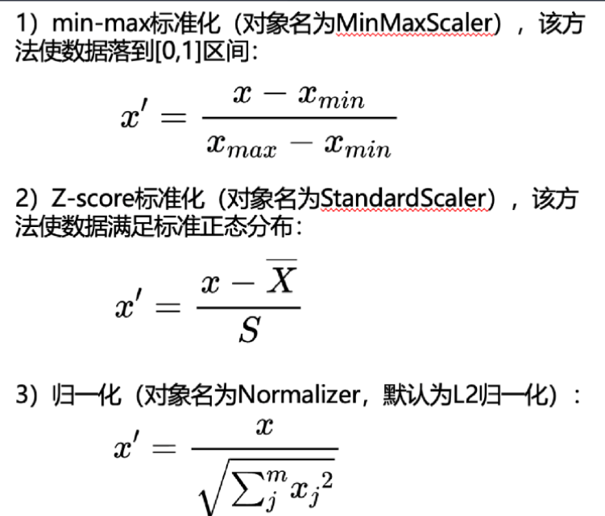
激活函数选择¶
| 激活函数 | 优点 | 缺点 | 典型应用场景 |
|---|---|---|---|
| Sigmoid | - 输出范围 (0,1)，可解释为概率 - 连续且可导 |
- 容易饱和导致梯度消失 - 计算较慢 - 输出非零均值导致训练效率低【梯度期望不为 0，容易出现极端梯度值】 |
二分类问题的输出层，二分类网络的最后一层 |
| Tanh | - 输出范围 (-1,1)，均值中心化，训练效果优于 Sigmoid | - 依然存在梯度消失问题 - 容易梯度坍塌 - 计算略慢 |
隐藏层激活函数，传统网络较常用 |
| ReLU | - 计算速度快 - 不会同时激活所有神经元（有些为 0） - 减缓梯度消失问题 - 稀疏激活提高效率 |
- 负区间梯度为 0，可能导致“神经元死亡” | 隐藏层最为常用的激活函数，卷积神经网络中广泛使用 |
| Softmax | - 多分类情况下，将向量转换为概率分布 - 便于概率解释 |
- 计算开销较大 - 对异常输入敏感 |
多分类问题输出层 |
| ELU | - 负区间具有非零输出，减小偏移 - 平滑且可微，缓解梯度消失 |
- 计算比 ReLU 复杂 - 训练时数值稳定性稍差 |
深度神经网络隐藏层，追求性能和稳定性的场景 |
| 激活函数对梯度下降的影响： 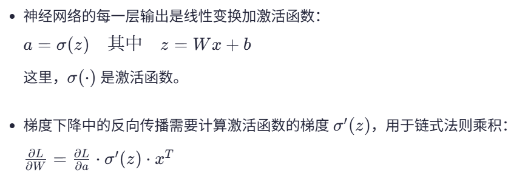 |
优化器选择¶
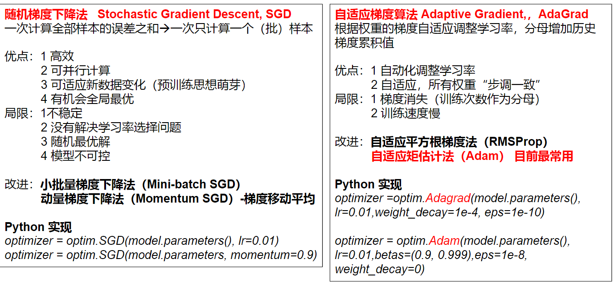
| 优化器名称 | 主要特点 | 优点 | 缺点 | 适用场景 |
|---|---|---|---|---|
| SGD（随机梯度下降） | 每次用一个样本计算梯度更新参数 θt+1=θt−η∇θJ(θt) -θt：参数向量（第t次迭代） - η：学习率 - J(θ)：损失函数 - ∇θJ(θt)：参数的梯度 |
大规模数据上训练速度快；可并行化；可适应性（模型可以立即用这些新数据进行迭代更新，而无需重新训练整个模型）；全局最优化（产生噪声跳出局部最优解） | 不稳定（引入噪声）；随机最优解；模型不可控 | 图像分类，目标识别 (高效处理海量数据；噪声产生正则化作用，随机更新避免局部最优，提高泛化能力；批量更新提高效率) |
| Mini-batch SGD | 每次用一小批量（mini-batch）样本计算梯度 | 计算效率和梯度稳定性折中，训练更快且稳定 | 需要选择合适的batch大小 | |
| Momentum SGD（动量梯度下降） | 在SGD上加动量项，用上次梯度方向辅助当前更新 （累计了过去梯度的移动平均值） 【之前的更新方向会对当前更新有贡献，形成“动能”，使参数能越过局部震荡区； 如果梯度方向持续一致，动量会使更新步长变大，收敛更快； 如果梯度方向变换，则动量起到缓冲，使更新不会大幅反向震荡。】 |
加速收敛，减小震荡，克服局部最优（惯性翻过去了）效率更高 | 需调整动量超参数，可能过冲 | |
| AdaGrad（自适应梯度算法） | 自适应调整学习率，对历史梯度平方和做加权 \(\theta_{t+1} = \theta_{t} - \frac{\eta}{\sqrt{G_{t}+\epsilon}} \cdot g_{t}\) - η 是初始学习率 - ϵ 是防止分母为零的小数，通常取很小的值 - G_t 是梯度平方和 |
适合稀疏特征 （梯度累积得慢，保持较大的学习率）；自动化：无需调节全局学习率；自适应，所有权重步调一致 | 学习率单调递减，训练后期收敛变慢，梯度消失；速度慢 | NLP，稀疏特征场景 |
| RMSProp（自适应平方根梯度法） | 改进AdaGrad，添加衰减系数 | 降低训练次数对学习率衰减的影响；缓解了梯度消失；训练更稳定，适合非平稳目标 | 对超参数敏感，如学习率和衰减率需调节 | 循环神经网络，强化学习 |
Adam |
结合Momentum和RMSProp，带有梯度偏置修正 | 收敛快，自适应学习率，训练稳定 | 偶尔泛化性能稍差，调参复杂 | 最广泛应用，统治了 NLP, RL, GAN, 语音合成等领域 |
| 可以理解为动量的作用是同一方向上不断加速；而自适应学习率减缓梯度一直大的地方的学习率。一个是方向，一个是大小 | ||||
| ### 损失函数选择 |
| 中文名称 | 英文名称 | 公式 | 主要特性/优缺点 | 常用场景 |
|---|---|---|---|---|
| 均方误差 | Mean Squared Error (MSE) | \(MSE = \frac{1}{N} \sum_{i=1}^N (T_i - Y_i)^2\) | 对异常值敏感，优化简单，是回归任务中最常用的函数之一 | 回归 |
| 平均绝对误差 | Mean Absolute Error (MAE) | \(MAE = \frac{1}{N} \sum_{i=1}^N \|T_i - Y_i\|\) | 衡量绝对误差，单位与数据一致；相比均方误差，对异常值鲁棒；导数不连续，可能影响收敛速度 | 回归 |
| 平均绝对百分比误差 | Mean Absolute Percentage Error (MAPE) | \(MAPE = \frac{1}{N} \sum_{i=1}^N \left \|\frac{Y_i - T_i}{Y_i} \right\| \times 100\) | 衡量相对误差，易解读为百分比；便于跨不同规模数据比较，业务解读友好；真实值为零或接近零时不稳定，不能处理负值情况 | 回归 |
| 均方根对数误差 | Mean Squared Logarithmic Error (MSLE) | \(MSLE = \frac{1}{N} \sum_{i=1}^N \left[ \log(T_i + 1) - \log(Y_i + 1) \right]^2\) | 通过对数减小较小值与较大值的差异，使误差计算更稳定。关注相对误差，适用规模差异大，多数量级数据，要求非负数据 | 回归 |
| 二 分类交叉熵 | Binary Cross-Entropy | \(Loss = -\frac{1}{N} \sum_{i=1}^N \left[ Y_i \times \log T_i + (1 - Y_i) \times \log(1 - T_i) \right]\) | 配合 Sigmoid，概率为输出，表达概率分布的差异 | 二分类 (sigmoid) |
| 多分类交叉熵 | Categorical Cross-Entropy | \(Loss = - \frac{1}{N} \sum_{i=1}^N Y_i \times \log T_i\) | 配合 Softmax | 多分类（Softmax） |
| \(Y_i\) 为真实类别标签的 one-hot 向量，\(T_i\) 为预测概率 |
深度学习各算法比较¶
| 模型 | 应用场景 | 算法 | |
|---|---|---|---|
| 单层感知机 | 只能处理线性二分类问题 | 输入向量+权重向量+线性变换+激活函数 | |
| 多层感知机 mlp | 非线性分类问题，非线性回归 | 多个感知机模型+损失函数+BP 算法（误差反向传播）【包含梯度下降法】 | |
| Cnn | 图像分类，物体检测，分割，回归问题（面部器官检测，人体姿势估计） | 归一化+卷积+池化+展平+全连接层 mlp | |
| Rnn | 一对一：图像去加噪，数据加减密； 一对多：图像生成文本标签，拼写纠正，扩写； 多对一：情感分类；垃圾邮件识别；股票涨跌判断（分类）；关键词提取 ； 同步多对多：命名实体识别；词性标注； 异步多对多：语言预测；机器翻译；文本摘要；聊天机器人；语音识别；股票走势预测 |
反馈神经网络 | 无法学习太长的序列，梯度消失 |
| Lstm | 机器 翻译；文本生成等 |
输入门，输出门，遗忘门，记忆状态 | 解决了梯度消失问题；计算复杂，训练时间长，并行能力有限 |
| Gru (门循环单元) | 更新门，重置门 | 去掉了记忆状态，结构简化了，加快训练速度 | |
| Bi-rnn (双向rnn) | 两个rnn | 上下文信息的双向捕捉 | |
| deep rnn | 多个隐藏层的rnn | 提取更高级别特征 | |
| nlp | 语音识别，文本分析理解，文本转换，文本生成 |
语义相似度计算¶
| 余弦相似度 | \(cos\theta=\frac{A\cdot B}{\|A\|\|B\|}\) |
| 欧式距离 | |
| Jaccard 相似度 | A 并 B 除以 A 交 B |
| 广义 Jaccard | \(\frac{A \cdot B}{A^2+B^2-A\cdot B}\) |
| 曼哈顿距离 |
大语言模型算法比较¶
| 词袋模型BoW | 统计语言模型 | 上下文预测，文本分类，文档聚类，信息检索，情感分析 | 分词+构建词表+计算词频+向量化 | 简单直观；但忽略了词语间的顺序和语境 |
| Word 2 Vec | 统计语言模型 | 把词用固定维度向量表示 | 训练神经网络来学习词嵌入（训练出词向量） | 基于上下文预测目标词或基于目标词预测上下文 |
| CBoW | 统计语言模型，一种 WOrd 2 vec | 上下文学习预测中间词 | ||
| Skip-Gram | 统计语言模型, 一种 word 2 vec | 中心词学习预测上下文 | ||
| LSTM, BiRNN, DeepRNN | 序列生成模型（基于rnn） | |||
| Seq 2 Seq | 序列生成模型 | 将输入序列编码为隐状态, 从隐状态出发，逐步输出 | 编码器+解码器 | |
| Transformer | 序列生成模型，引入自注意力机制的特殊的 Seq 2 seq | 解决了 rnn 只能串行处理的问题；很好理解上下文语义，不管距离多远 | ||
| BERT | 预训练大模型 | 只用解码器 | ||
| GPT | 预训练大模型 | 只用编码器 | ||
| T 5 | 预训练大模型 | 解码器+编码器 | ||
| ### 微调方式 | ||||
| 全微调 | ||||
| 部分微调：冻结部分参数 | ||||
| 高效参数微调（PEFT）：接近全量微调效果 | ||||
| 提示词微调：只更新 embedding 参数 | ||||
| RLHF：强化学习实现与人类价值观对齐 | ||||
| ### 多模态大型语言模型 MLLM | ||||
| 模态编码器+llm+模态接口 | ||||
| ### 绘画 | ||||
| ARRON：基于规则 | ||||
| 深度学习模型（DL） | ||||
| 生成式对抗网络（GAN）: 生成器：结果趋于 1，效果好； 判别器：结果趋于 0，效果好；不断对抗，最终结果趋于 0.5（纳什均衡） | ||||
| Deep Dream: 用 cnn 判别输出结果，反向传播 | ||||
| DALLE_E: 多模态CLIP+VAE (自分编码器)+扩散模型：CLIP: 文本图像各自编码存入隐空间，实现匹配 （文本编码器，图像编码器） | ||||
| 扩散模型；含 DALLE-E，stable diffusion, sora. 向前扩散，反向去噪，模型优化，与词向量关联 |